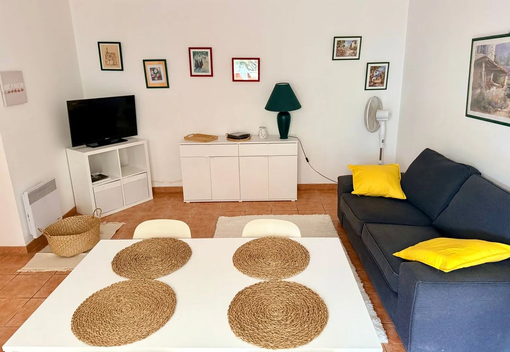

Olivier y Lavande
Dos casas gemelas, cada una con su terraza privada; la de Lavande da a la piscina. Decoración sencilla y acogedora, y una cesta de bienvenida a su llegada.
Descubrir Olivier y LavandeLa casa más grande de la Résidence Le Théâtre Antique: 65 m² y dos terrazas privadas orientadas al sur y al este, en una finca cerrada con piscina, gran jardín y pista de petanca.
Les Cigales acoge a 4 personas en 65 m²: un dormitorio con cama doble, un segundo dormitorio con dos camas individuales, un salón con televisor y wifi, un baño con ducha y una cocina equipada: lavadora, microondas, nevera, cafetera.
Sus dos terrazas privadas, orientadas al sur y al este, invitan a disfrutar del sol de Provenza. Hay tumbonas a su disposición y sus anfitriones le prestan la barbacoa. Se pueden añadir una cuna y una cama supletoria.
A su llegada le espera una cesta de bienvenida. La limpieza final, las sábanas y las toallas están incluidas en el precio.
La finca está cerrada por una verja. La piscina de 10 × 5 m, el gran jardín, la pista de petanca y el aparcamiento se comparten entre las tres casas de la Résidence. El Teatro Romano está a un paso, y el centro de Vaison-la-Romaine a 300 m a pie.
Precios por casa y por semana. Estancia mínima de 3 días en temporada baja y media, de una semana en temporada alta.
| Temporada | Por semana |
|---|---|
| Temporada bajade enero a abril, de octubre a diciembre | 750 € |
| Temporada mediamayo, junio y septiembre | 850 € |
| Temporada altaverano (vacaciones escolares) y festivos | 950 € |
Llegada a partir de las 16:00, salida entre las 9:00 y las 10:00. El precio exacto de sus fechas aparece al elegirlas en el calendario de reservas.
Elija una casa y luego sus fechas. El calendario es el mismo que en nuestras otras plataformas: una fecha libre aquí está realmente libre.
Pago en línea seguro y confirmación por correo electrónico. ¿Alguna pregunta antes de reservar? Escríbanos.

Dos casas gemelas, cada una con su terraza privada; la de Lavande da a la piscina. Decoración sencilla y acogedora, y una cesta de bienvenida a su llegada.
Descubrir Olivier y Lavande